C:\OH\ABOUT\Info 소개
HELLO, I’M OH SEUNG-MYUNG
저는
팀이 필요로 하는 순간
뭐든지 될 수 있습니다.
저만의 색을 지키면서도,
함께하는 사람과 상황에 따라 표현 방식을 바꿀 줄 아는 기획자 오승명입니다.
나의 속성
나를 표현하는 키워드- 나다움
- 유연함
- 협력
제목표시줄을 끌어 창을 옮기세요. 클릭한 창은 맨 앞으로 옵니다.UTF-8
Welcome to my desktop
HELLO, I’M OH SEUNG-MYUNG
저만의 색을 지키면서도,
함께하는 사람과 상황에 따라 표현 방식을 바꿀 줄 아는 기획자 오승명입니다.
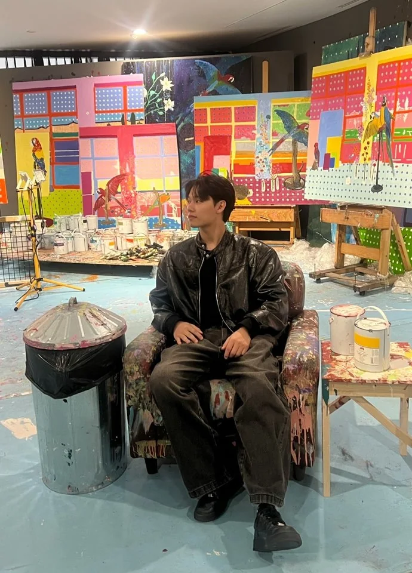
오승명Oh Seung-myung
MS OFFICEWORK
문서 작성 및 DB 제작
ObsidianWORK
문서 초안 작성, 플러그인을 통한 정리 자동화
GitHubCOLLABORATION
협업 시 빌드 업데이트 및 버전 관리
UnityENGINE
오브젝트 배치, 씬, 부모관계 이해 / MCP를 활용한 개발 경험
FigmaDESIGN
UI 목업, 템플릿 제작 및 협업 문서 작성
AIAI
리소스 생성 및 프로토타입 개발 외 하네스 엔지니어링
각 제품명과 로고는 해당 소유자의 상표입니다. 이 표시는 사용 경험을 설명하기 위한 것이며 후원 또는 제휴를 의미하지 않습니다.
목록에서 프로젝트를 골라 제가 맡은 역할과 결과를 살펴보세요.
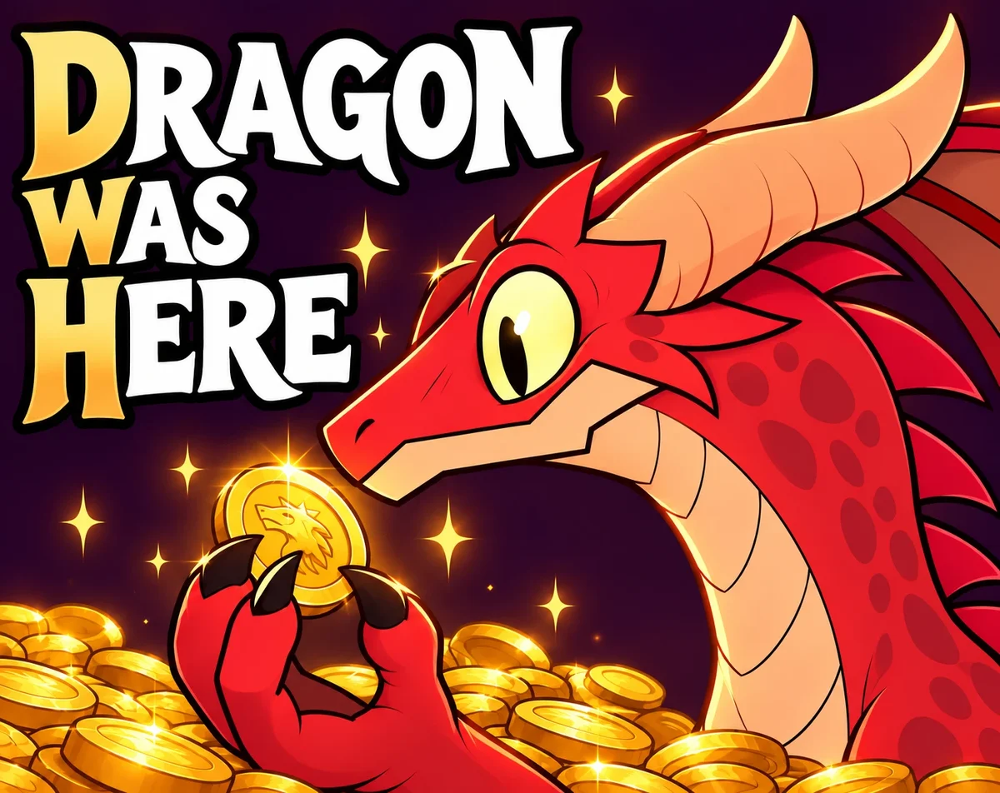
용이 달리며 도시를 부수는 PC 인크리멘탈 게임입니다. itch.io에 검증판을 무료로 공개했고 Steam 출시를 준비하고 있습니다.
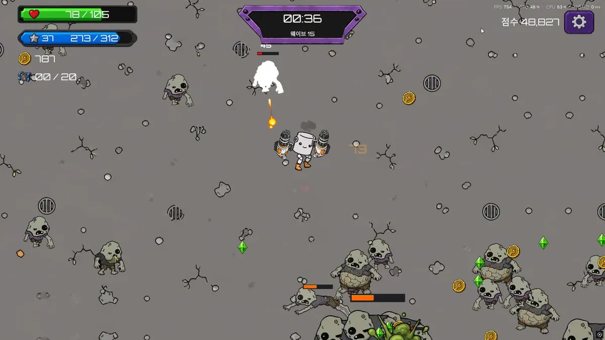
5인 팀으로 완성하고 itch.io에 출시한 뱀서라이크 게임입니다.
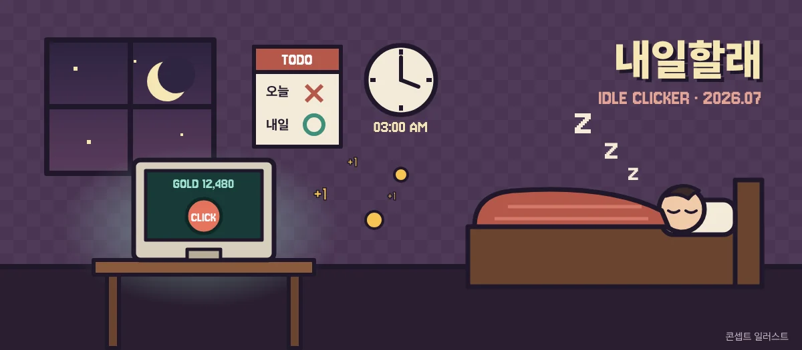
2인 팀으로 진행한 방치형 클리커 프로젝트입니다.
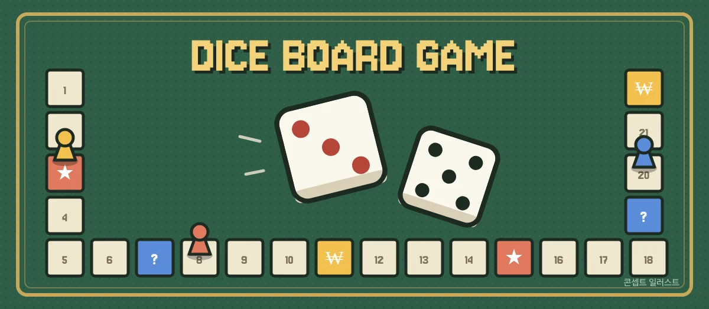
6인 팀의 부팀장으로 참여한 주사위 보드게임 프로젝트입니다.
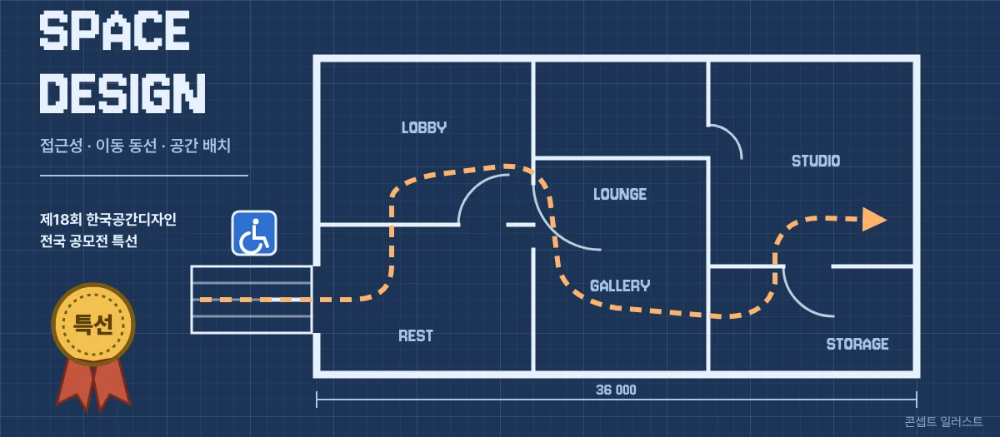
2인 팀으로 참여해 제18회 한국공간디자인 전국 공모전 특선을 수상한 프로젝트입니다.
게임을 소비한 시간이 아니라 무엇을 관찰하고 어떤 질문을 남겼는지 보여주는 공간입니다.
50개 게임을 플레이했습니다
3,879.5시간 · 시간이 기록된 45개 게임 합계
리그 오브 레전드, 롤토체스, 메이플스토리, 아이온2, 대항해시대 온라인은 합계에서 제외

오픈월드의 재미는 맵의 넓이보다 플레이어가 무엇을 해도 받아 주는 시스템에서 나온다는 걸 배웠습니다.
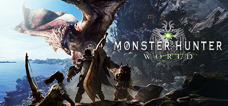
안쟈나프에게 하루를 쓰며 패턴을 익혀 넘는 난도가 스펙 상승보다 오래 기억된다는 걸 알았습니다.
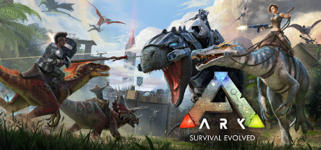
시간을 들여 길들인 공룡과 지은 집이 소유감이 되고 그 소유감이 부족과 커뮤니티로 번지는 과정을 겪었습니다.
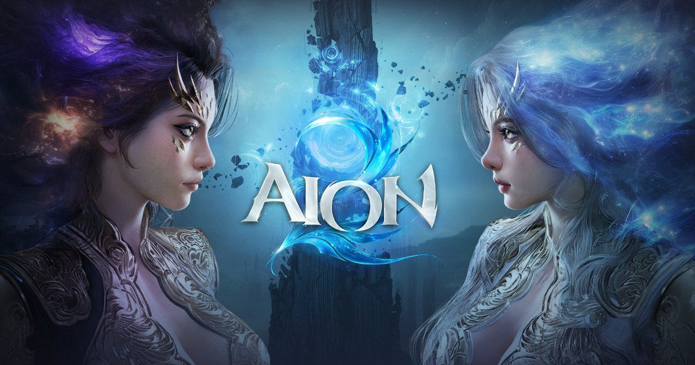
진영 구도와 전투 스케일이 곧 게임의 정체성이 된다는 것, 그리고 전투의 재미와 성장 스트레스 사이 균형이 얼마나 중요한지 봤습니다.
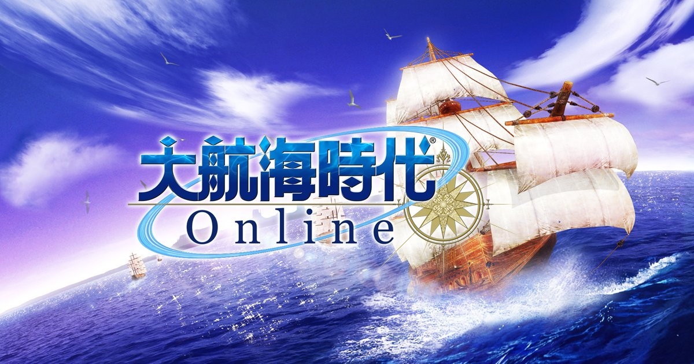
전투가 없어도 교역과 탐험만으로 오래 즐길 수 있었고 자유도가 높을수록 목표를 보여 주는 설계가 중요하다는 걸 배웠습니다.
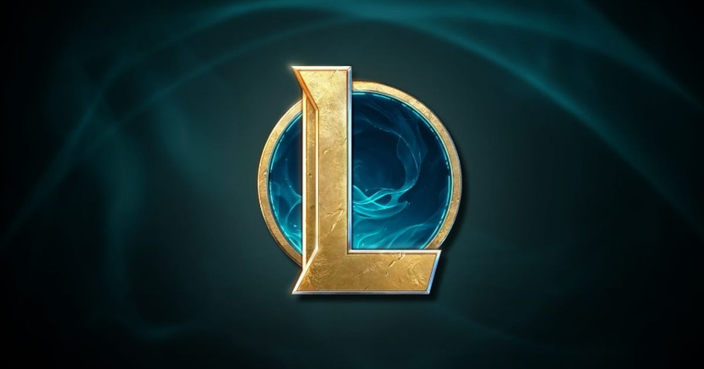
같은 챔피언도 아이템과 스킬 순서로 메타가 바뀌어 빌드의 자유도와 캐릭터 완성도를 고민하게 됐습니다.
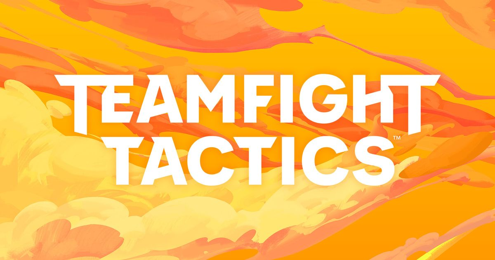
조작이 적어도 확률과 배치 판단만으로 깊은 전략이 나온다는 걸 배웠습니다.
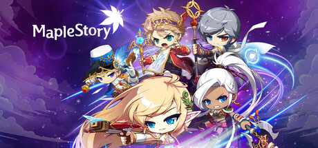
성장 수치와 체감을 묶으면 오래 붙잡지만 확률형 강화는 실패를 어떻게 다루느냐에 신뢰가 달려 있습니다.
 01
01템포가 느려도 서사와 연출, 시스템이 한 톤으로 묶이면 플레이 자체가 이야기가 됩니다.
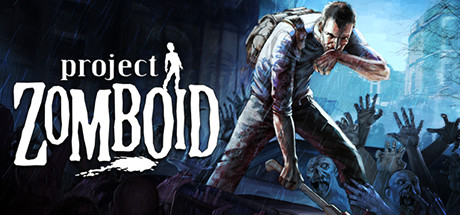
02한 번 물리면 끝나는 규칙 하나가 모든 선택을 신중하게 만듭니다.
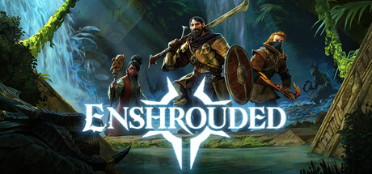
03짓고 싶은 집이 다음 탐험의 이유가 되는, 건축과 탐험의 맞물림을 즐겼습니다.
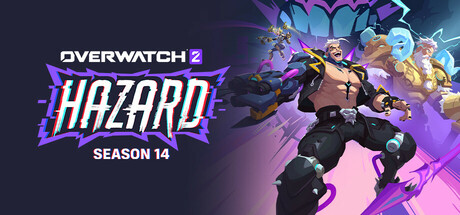
04역할이 겹치지 않는 영웅 설계 덕분에 짧은 교전에서도 조합을 고민하게 됩니다.
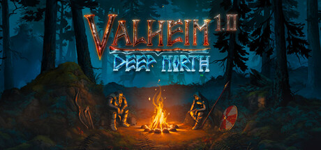
05보스를 잡아야 다음 재료가 열리는 구조가 생존 게임에 또렷한 진행 목표를 줍니다.
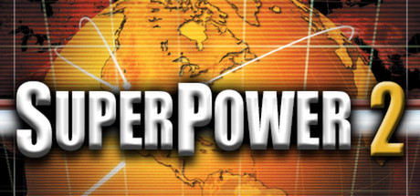
06숫자 하나를 바꾸면 국가 운영 전체가 연쇄로 흔들리는 시스템이 재미있었습니다.
 07
07증거를 모아 유령을 추리하는 구조라 무서운 순간이 곧 정보를 얻는 순간입니다.
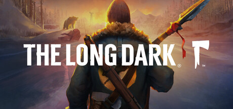
08체온과 허기, 피로가 지도 위 동선을 정하게 만드는 생존 설계가 기억에 남습니다.
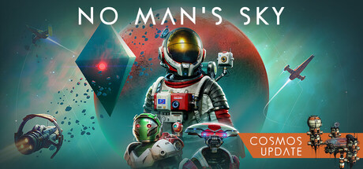
09출시 뒤 꾸준한 업데이트로 평가를 뒤집은 과정에서 라이브 운영의 힘을 봤습니다.
 10
10전작의 사냥 루프는 지키고 이동과 편의를 다듬은 모습에서 후속작을 어떻게 다듬는지 봤습니다.
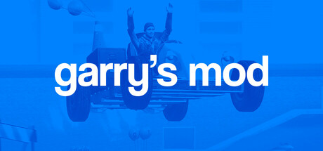
11목표 없이 도구만 줘도 플레이어가 스스로 놀이를 만들어 냅니다.
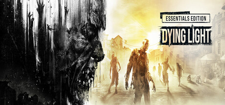
12낮에는 사냥터, 밤에는 도망칠 곳이 되는 같은 맵의 변주가 인상 깊었습니다.
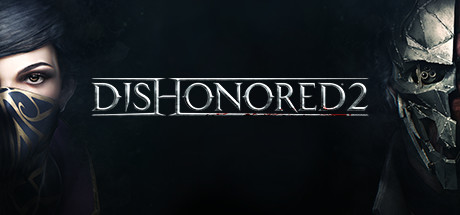
13잠입이든 전투든 어떤 방식을 골라도 길이 열리는 레벨 디자인이 좋았습니다.
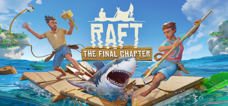
14작은 뗏목을 직접 넓혀 가는 성장이 눈에 보여서 오래 붙잡게 됩니다.
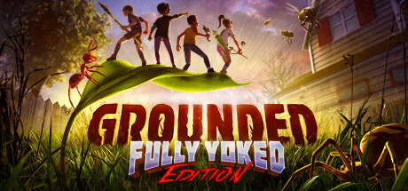
15몸이 작아지는 설정 하나로 익숙한 뒷마당이 낯선 생존 무대가 됩니다.
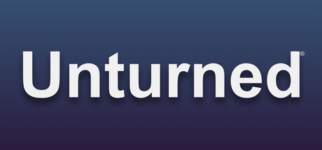
16그래픽이 단순해도 파밍과 생존 규칙이 탄탄하면 충분히 몰입됩니다.
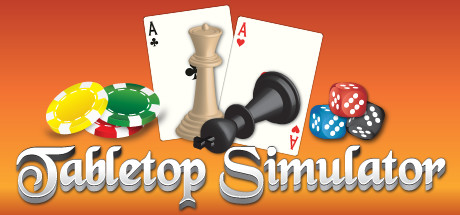
17규칙을 시스템이 강제하지 않아서 함께하는 사람끼리 정하는 과정까지 놀이가 됩니다.
 18
18파고들수록 넓어지는 지하 탐험이 농사와 제작 루프로 자연스럽게 이어집니다.
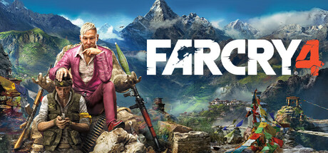
19거점을 하나씩 되찾을 때마다 지도가 바뀌어 진척이 눈에 보이는 오픈월드였습니다.
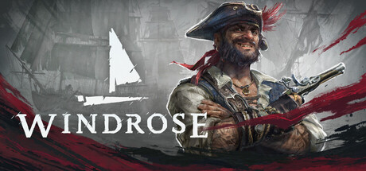
20항해와 해적 생존을 엮은 구조에서 대항해시대 때의 바다 모험을 다시 떠올렸습니다.
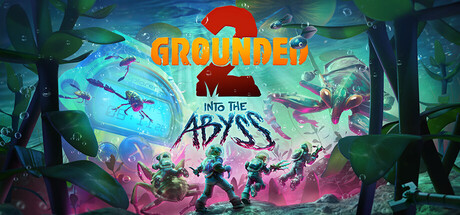
21전작의 생존 루프 위에 새 공간과 탈것을 더하는 후속작 확장 방식을 봤습니다.
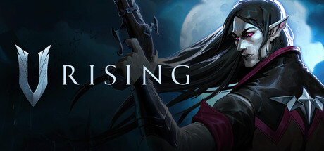
22햇빛이 곧 위험이라는 규칙 하나로 뱀파이어 콘셉트를 시스템에 녹였습니다.
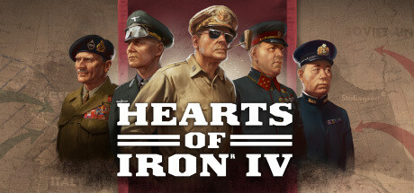
23생산과 보급, 외교가 얽힌 거대한 시스템도 한 단계씩 쌓으면 이해된다는 걸 알았습니다.
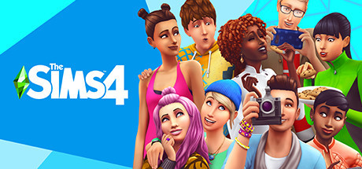
24정해진 목표가 없어도 캐릭터의 욕구가 알아서 이야기를 만듭니다.
 25
25닦은 만큼 바로 보이는 피드백 하나로 단순 반복이 휴식이 됩니다.
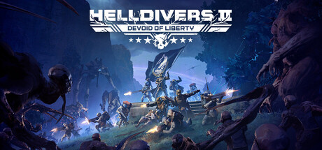
26아군 오사와 스트라타젬 입력 실수가 협동 플레이에 웃긴 변수가 생깁니다.
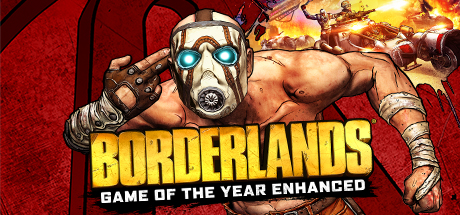
27무작위로 나오는 총기가 다음 상자를 열고 싶게 만드는 파밍의 힘을 느꼈습니다.
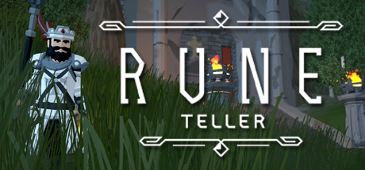
28동료를 모으고 채집과 제작으로 의뢰를 풀어 가는 느긋한 오픈월드 여행이었습니다.
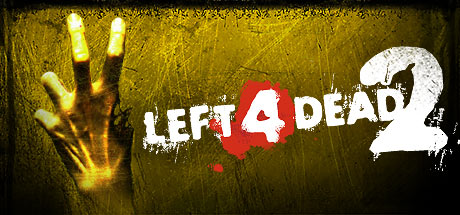
29AI 디렉터가 판마다 적 배치를 바꿔서 같은 맵도 매번 다르게 느껴집니다.
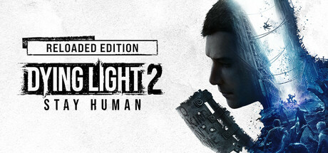
30선택에 따라 구역의 세력이 바뀌고 그에 맞춰 파쿠르 동선도 달라집니다.
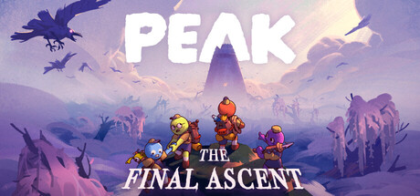
31체력과 스태미나만으로 협동 등반의 긴장과 웃음이 함께 나옵니다.
정해진 시간 안에 임무를 끝내고 돌아와야 하는 세션 구조 덕분에 생존에도 마감이 생깁니다.
이야기를 따라 탐험하고 제작하는 협동 생존이라 부담 없이 즐겼습니다.
기계 생명체의 부위를 노려 부수는 전투가 관찰하고 공략하는 재미를 줍니다.
 35
35할당량 압박과 근거리 음성 채팅이 공포를 웃음으로 바꿉니다.
관람객 만족과 공룡 안전 사이에서 균형을 잡는 경영 판단이 핵심이었습니다.
해가 지면 상황이 뒤집히는 낮과 밤의 리듬이 생존 계획을 세우게 합니다.
1대4 비대칭 구조라 살인마와 생존자가 서로 다른 긴장을 느낍니다.
마법을 조합해 몰려오는 적을 쓸어 담는 협동 서바이버의 손맛이 좋았습니다.
식당 운영을 친구와 나눠 맡을 때 생기는 소란이 협동의 재미가 됩니다.
버튼 하나와 리듬만으로도 난도를 끝없이 쌓을 수 있었습니다.
설명을 거의 하지 않아서 죽으면서 규칙을 하나씩 배우게 됩니다.